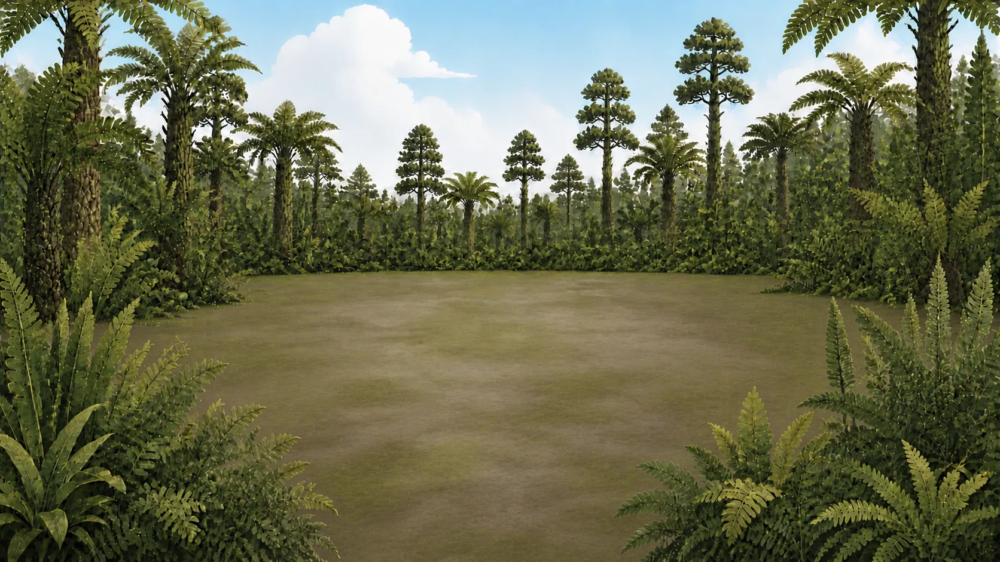
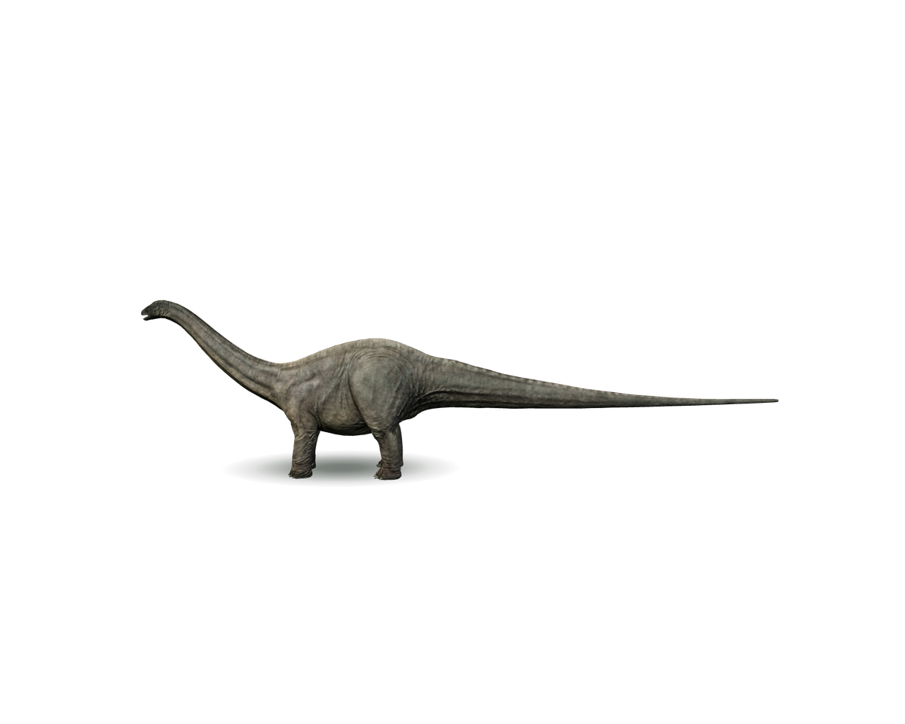
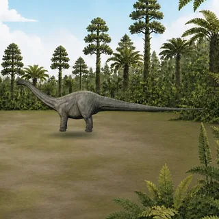

看看它长长的脖子、长长的尾巴和像柱子一样的四条腿。


正在准备迷惑龙展台。
一起了解更多
这是迷惑龙，它是生活在晚侏罗世的大型植食性恐龙。看看它长长的脖子、长长的尾巴和像柱子一样的四条腿。
迷惑龙生活在晚侏罗世（约 1.52亿–1.45亿年前），化石发现于北美洲（美国西部）。
本页研究资料由 Leon做了个依据公开博物馆资料和科学论文整理，并保留复原中的不确定性。最后复核：2026-07-27。
本项目代码采用 AGPL-3.0；原创科普文案与项目视觉采用 CC BY-NC-SA 4.0 非商业共享；品牌只独立防止冒充官方，第三方素材沿用原许可。
官方来源
史前动物博物馆由 Leon做了个制作并维护。以下地址用于确认官方作品与创作者来源。
资料还可以继续向上滑动。
Leon做了个
我是 Leon，一个程序员爸爸。女儿三岁时会害怕电视里的恐龙追逐，所以我给她做了这座可以安静观察、想听再听的 3D 史前动物博物馆。
这里免费访问，不用注册，也没有广告。一次发现一个有趣的细节，就已经足够。